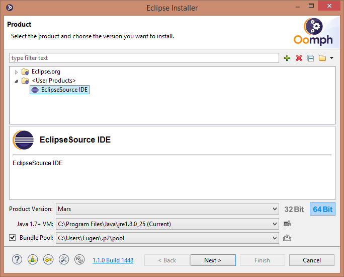

Getting Involved
Everyone is invited to get involved with the EMF Forms project. Before you plan any kind of contribution, it is a good idea to contact the project team.
Writing bug reports
Please provide a short and concise explanation of the problem and a snippet to reproduce the issue, ideally a JUnit test case that outlines the expected behavior. You are also invited to enter feature requests. Please use Bugzilla to report bugs and feature requests.
Commit Message Guidelines
We have the following commit message template:
Bug $BugID - $BugTitle | TCI - $FixTitle
$CommitDescription
Change-Id: $GeneratedGerritChangeID
Signed-off-by: $SignOffNameAndEmail
Instructions (Please continue READING):
- TCI commits: For trivial code changes please use a TCI commit message. See list below for examples. If in doubt please discuss with reviewer.
- Normal Commits: For all other commits use a commit message starting with ‘Bug’. Bug reports with Proper Titles: Before using a Bug title for a commit, committer must update the Bug title to a reasonable and descriptive title for the task they have worked on
- Commit Description: Additionally to the title, the commit message can describe briefly (2-3 sentences) how this commit fixes the bug from a technical perspective
- Multiple Commits for same bug: Of course you may use the same bug and therefore bug title for multiple commits and their message, in this case please provide a unique description
- Reviewers responsibility: The reviewer is responsible also for checking that the bug title is descriptive and reflects the committed change and that the description if any reflects the technical change
TCI message examples:
- JavaDoc
- NPE
- Version Update of manifest and pom
- anonymous to inner class Conversion
- Renaming local vars, e.g. because of typos
- Externalizing strings
Use Gerrit to contribute to ECP
We use Gerrit code review so you can easily contribute to ECP and get a review for your changes. Please make sure that all your commits refer to a Bugzilla Bug.
Providing a patch to fix a bug or add a feature
Please attach your patch to the bug report in question or create a new report using Bugzilla .
Contribute documentation
If you found something that is not documented yet, please share your knowledge with other users. Please contact us to find the appropriate place to add your documentation.
Bug report quality policy
Please note that our bug reports (BRs) are an essential source information for adopters to get an overview about applied changes and new features. Therefore, titles must indicate the affected component and express the goal of a change.
It is the reviewer’s responsibility to verify that the BR complies with this policy.
Tag bug reports to be retested
If you believe that a change could cause a regression for a consumer please add the “test” keyword to highlight that this feature should be re-tested when a consumer upgrades the affected component. Common instances where this keyword must be added include:
- when the behavior of a component has changed
- when a new feature has been added which is enabled by default
This also includes any changes of the default behavior and adaptations of visible UI elements, even if they are considered an improvement. Further, this includes non-trivial refactorings. If in doubt, prefer to tag a BR.
Additionally to the “test” tag, provide a comment like this:
TESTING INFORMATION
Summary of the critical part of the change
Potential regressions
Affected areas / use cases
Things that shall be tested
Again, it is part of the code review to check the BR title and the existence of an appropriate comment.
If you identify a regression or change of behavior after the fact, please add the “test” keyword and the testing information as well.
Tag “noteworthy” bug reports
Use this tags on bug reports, that are “noteworthy” especially:
- New features
- Process changes
In general, consider if you would write an article about a release and ask yourself, whether you would mention this bug report. If yes, it is noteworthy. Adopters and developers will use this information to learn what’s noteworthy in a release. So please make sure, that “noteworthy” bug reports have a proper description.
Tag bug reports with “Help wanted”
If you want to encourage that other contributors or committers pick up a Bug report, please tag the Br with the “help wanted” keyword. In turn, if you want to contribute to the project, the “help wanted” BRs are a good starting point.
Developer Resources for EMF Forms
Using Oomph we want to ease the setup pain for new contributors and committers of EMFForms. Here are the necessary steps:
- Step 1: Download Oomph for your Platform
- Step 2: Start Oomph
- Update Oomph to the latest version if required (Simple Mode: Upper right corner or Advance Mode: left bottom)
- Switch to Advanced Mode (Upper Right corner, Advanced Mode)
- Drag and Drop / add ("+" in the upper right corner) this profile EclipseSource Profile 
- Select the ‘EclipseSource IDE’ entry and press next
- Drag and Drop / add ("+" in the upper right corner) this setup file: EMFForms.setup into the top list. You should now see a new Entry at the top:

- Select the EMFForms entry and double click it, it should be BOLD now:

- Press next and select the way you want Oomph to install your Eclipse and Workspace
- Press Finish and let Oomph do the magic
- Step 3: When Oomph finishes you still have to do some manual steps
- Locate and open the ecp.target file in the org.eclipse.emf.ecp.target.rcp bundle imported from the repository. When it is resolved, set this definition as the target platform. This may take quite some time at first.
- Step 4: Start developing using ECP
Branching scheme
-
In our GIT Repositories, we are using the branching scheme described here.
-
We have a master branch containing the last release. A development branch containing the current development state and (hopefully) some feature branches containing new feature developments.
-
So if you are a developer, please commit on the develop branch in the future. If you develop a new feature, please open a feature branch and merge it back to the develop branch when your feature is finished. Don’t commit on the master branch because it should only contain stable release versions merged there by the release engineer.

Profiling and Performance Debugging
- YourKit is kindly supporting the EMF Forms open source project with its full-featured YourKit Java Profiler, which helped us to greatly improve EMFForms.
Framework Developer Guidelines
The following sections describe the guidelines for creating new plugins and features for EMFForms.
General settings
These settings can be modified in the “New Plug-in Project/New Feature” wizards.
- Namespace: The plugin-name should begin with “org.eclipse.emfforms”. Therefore the name of our example plugin and the prefix for the packages would be “org.eclipse.emfforms.example”. The name of a feature would be e.g. “org.eclipse.emfforms.example.feature”.
- Execution Environment: As JRE version the plugin should use 1.6, so please select “J2SE-1.6”. (Note that a feature does not have this setting.)
- Version: As version please use the current version (see in other plugin) plus the qualifier, e.g. “1.0.0.qualifier”.
- Name: Enter a describing name for your plugin, e.g. “Cool Example Plugin”.
- Provider: For the provider please enter “Eclipse Modeling Project”.
Plugin runtime
When defining the export packages on the runtime tab, please note the following:
Plugins should export all defined packages. The exported packages should not be visible by default.
- Internal packages (not visible) should follow the “org.eclipse.emfforms.internal” naming convention
- SPI packages (visible, breaking changes allowed in minor releases) must follow the “org.eclipse.emfforms.spi” naming convention
- API packages (visible, no breaking changes allowed in minor releases) should follow the “org.eclipse.emfforms” naming convention
If you don’t want to make a potential API package visible yet, please follow the “org.eclipse.emfforms” naming convention but mark the package as not visible.
Plugin dependencies
When adding dependencies to your project please note the following giudelines:
Usually we use “Required Plug-ins” to add dependencies that we need. There is one exceptions: If you add dependencies to SWT/JFace you have to use “Imported Packages”.
- Plugins should have the needed minimum version and the next major version as maximum version, e.g. “[4.8.1, 5.0.0)”.
- Reexport dependencies when you use classes from the other plugins in your API.
- Imported Packages should have the needed minimum version and the next major version as maximum version, e.g. “[4.8.1, 5.0.0)”.
Required legal files
When creating a new plugin make sure to copy the “about.html” from an existing plugin to your project. Then open the build.properties and add the about.html to the Binary as well as to the Source Build.
Formatting & co
- We set all setting in a project specific way. Therefore no action is required for existing projects. If you want to create a new bundle, please follow these instructions:
- The lazy and best way is to copy all files from the .settings (except any .api_filters file) folder into the newly created project. You also must copy the .checkstyle file. After that you have to open the project properties and activate checkstyle. The config will already be set to the correct value.
Generating new models
If you have to create a new EMF Model follow these steps before generating:
-
Set the formatting of the project according the formatting rules
-
Set the Code Formatting and the Comment Formatting to true in the genmodel
-
In the genmodel file Set the Copyright Text to:
Copyright (c) 2011-2020 EclipseSource Muenchen GmbH and others.
All rights reserved. This program and the accompanying materials
are made available under the terms of the Eclipse Public License v1.0
which accompanies this distribution, and is available at
http://www.eclipse.org/legal/epl-v10.htmlContributors:
{userId} - initial API and implementation
Extension Point Guidelines
When adding a new extension point please mind the following guidelines:
-
The plug-in ID must be the same as the ID of the project defining the extension point
-
The point ID must not be fully qualified. The name must be camel cased
-
The point name must be understandable and give a good hint at what the extension point is doing
-
The Description tab must contain a description for the extension point. If the point is experimental (API not fixed) add the following line:
This extension point is experimental and is likely to change in the future releases as the activity support evolves. -
The Since tab must contain the Version of the plugin since which it is part of the API. (Even if it is experimental). The Version format is maj.min, e.g. 1.1
-
The Examples tab should contain an example of an usage of this extension point. Use the “pre” tags to display markup.
-
The API Information tab should contain a description of classes being used for defining this extension point.
-
The Supplied Implementation tab should contain a description of a supplied implementation of this extension point, if one implementation is supplied.
-
The Copyright tab must contain the copyright agreement, it looks like this:
Copyright (c) 2011-2020 EclipseSource Muenchen GmbH and others.
All rights reserved. This program and the accompanying materials
are made available under the terms of the Eclipse Public License v1.0
which accompanies this distribution, and is available at
http://www.eclipse.org/legal/epl-v10.htmlThe company name must be adjusted if necessary.
-
You can use HTML tags in all tabs. Use this possibility to improve the readability of your texts.